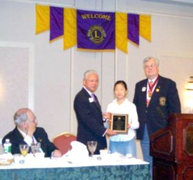

毕业於华盛顿商学院的绘画天才—宋芃芃
宋芃芃高中时即成为一位极为杰出的小画家，还被新州北部多媒体中心挑选为年度唯一与专业多族裔画家共同联展的高中生。同一时期，她还受邀在多媒体中心画廊举办个人画展。
有一天，无意中翻到自己小时候来莎伦画院所绘的第一张画，用油彩笔画的一只母鸭带着三只小鸭在芦荟丛中游戏，有一只还落在后头，画面以黄色为主色调。当时还没有什么技巧，有点拙糙，但刘老师一眼就看出这是个胆大有魄力的孩子，能学出名堂。刘老师对学生的每一幅画都记忆犹新，哪怕隔了七、八年。
再瞄到这幅画时，宋芃芃赶紧把它翻盖过去，显露羞涩与难为情，大家都笑了。当然，无论小时候画的怎样，后来再看，自己都不喜欢不满意。
且不说宋芃芃参赛得奖都百发百中，作品还被布丹政府和联合国选作邮票，并被选为难度极大的政府荣誉——“州长学校”（Government School）绘画奖，AP艺术满分⋯ 但最后她是从全美最顶尖的商学院——宾大华顿商学院毕业，目前在纽约从事金融工作。
今天在翻阅旧照时，看到她以前颁奖的一些照片，真是感慨，一个稚气的小女孩已经长大成人了。
（2013）